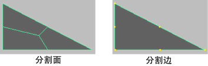

可以使用
“编辑网格 > 添加分段”(Edit Mesh > Add Divisions)将一条多边形边分成两条或更多条边。在需要将边分割为两个或更多部分时，此功能很有用。例如，如果将三角形的一条边分成两半，它将理所当然成为四边多边形（四边形）。

将多边形边分割成两条或更多条边
- 选择要拆分的边，然后选择“编辑网格 > 添加分段”(Edit Mesh > Add Divisions)，或者单击建模工具包中的 。
- 在显示的视图中编辑器中，编辑 polySubdFace 节点选项。
- 将“分段级别”(Division Levels)设定为要创建的内部分段的数量。